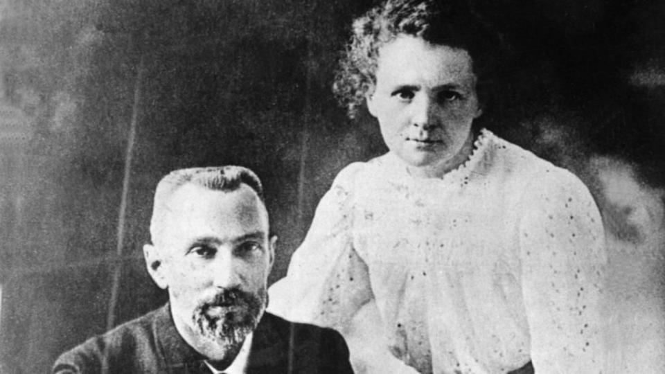

Maria Sklodowska (Marie Curie) va neixer a Varsovia el 7 de novembre de 1867. Era la mes petita de 5 germans: Zosia, Józef, Bronya, Hela i ella. Els seus dos pares eren mestres. El seu pare, matematic i la seva mare, la qual va morir de tuberculosi quan Marie tenia 10 anys, fisica.
De petita, degut a la seva curiositat, sempre imitava al seu pare i va aconseguir ser la millor alumna de la seva escola. Tot hi aixo, no va poder anar a l'universitat ja que era exclusiva per homes. Curie va haver d'estudiar de forma secreta doncs que una dona estudiés contingut universitari era un crim.

Despres de treballar durant 5 anys com a professora, el 1891 va acumular suficients diners com per a viatjar a Paris, a l'universitat de Sorbonne. Allà va a obtenir un master de fisica i matematica abans de casar-se amb el fisic frances Pierre Curie (D'aqui aconsegueix el seu cognom) l'any 1895.
Durant el seu matrimoni amb Pierre van convertir-se en un duo cientific inseparable. En un principi Marie i Pierre treballaven en projectes separats, però quan Marie va descobrir la radioactivitat Pierre va deixar de costat les seves investigacions per a ajudar-la amb el que fos necessari. Per desgracia, Pierre va morir el 1906 despres de ser atropellat per un carro de cavalls. Marie, devastada per la seva perdua, va complir el desig del seu marit i va convertir-se en la primera professora de l'universitat de Sorbonne.
Quan la Primera Guerra Mundial va començar, Marie va dedicar tot el seu esforç i temps a la causa. El seu descobriment més important d'aquest periode fou la creació de maquines de rajox X portatils, els quals van aconseguir el sobrenom de "Petits Curie".
Un cop la guerra va acabar, Curie va utilitzar tots els seus recursos en avançar l'investigació de la radioactivitat i per a aconseguir fons per diversos projectes fins que va morir l'any 1934 degut a enverinament provocat per l'exposició prolongada a la radiació.